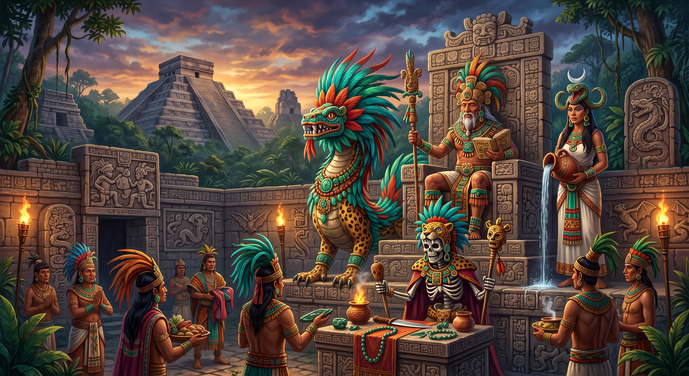
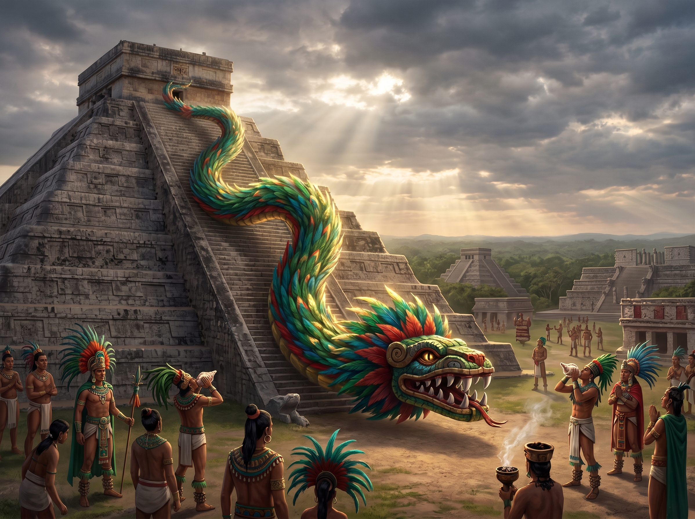
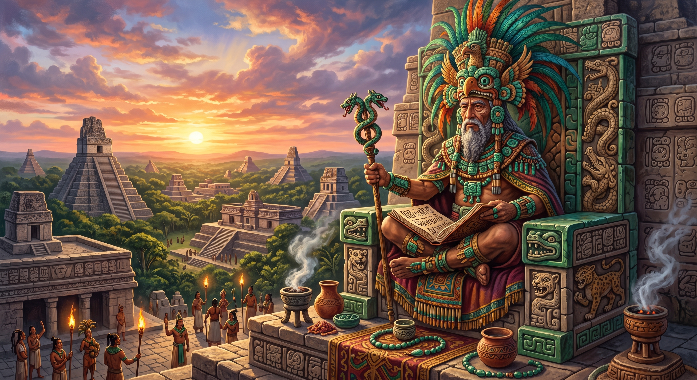
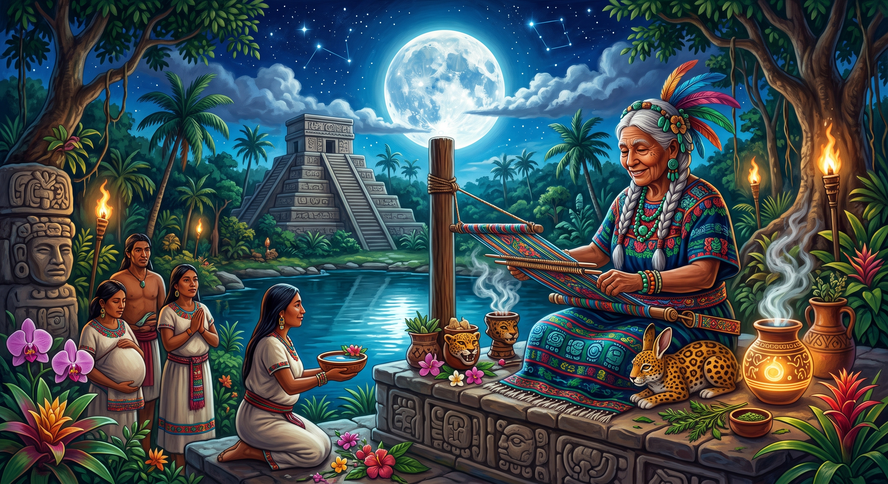
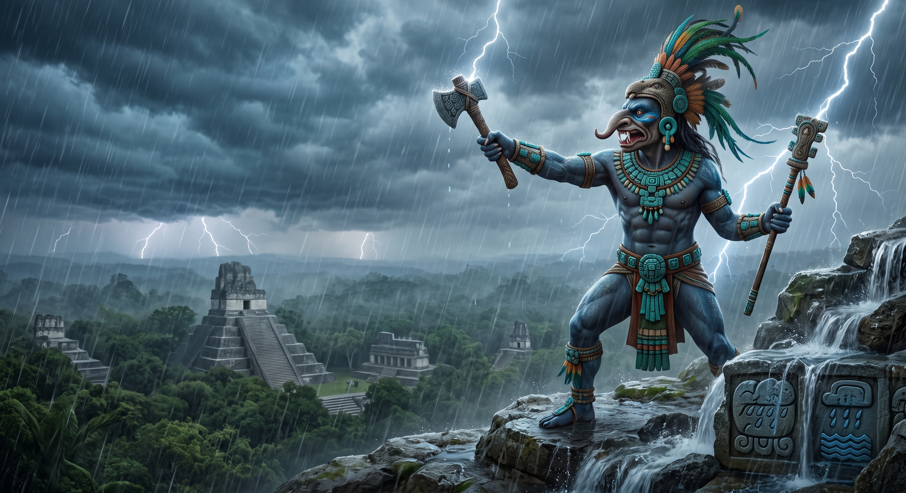
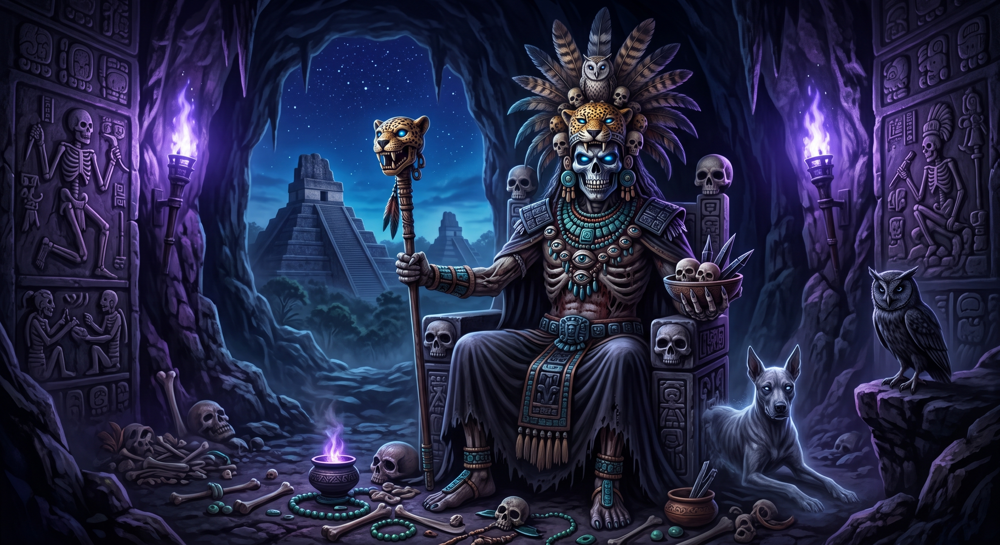
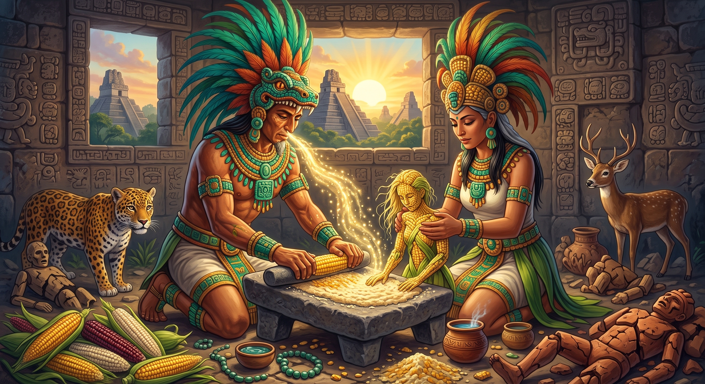
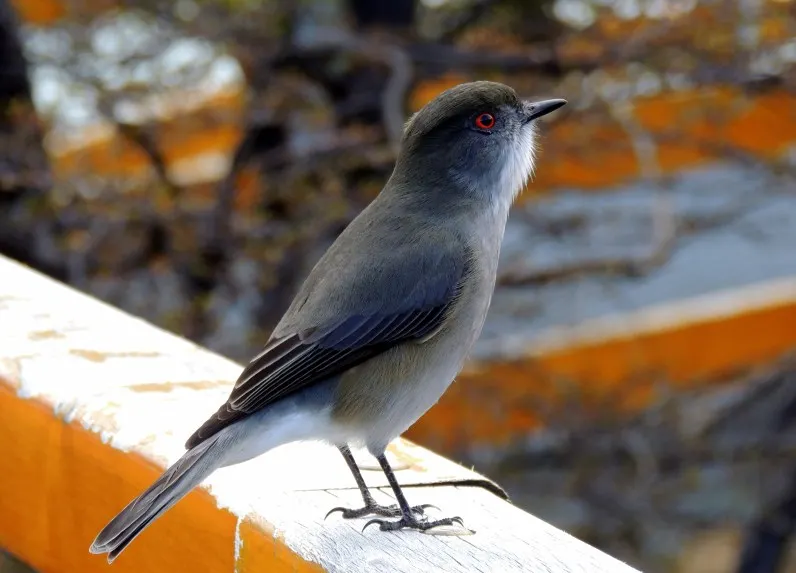
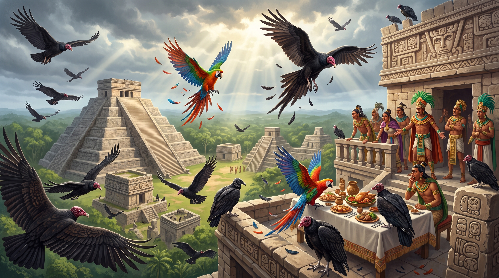
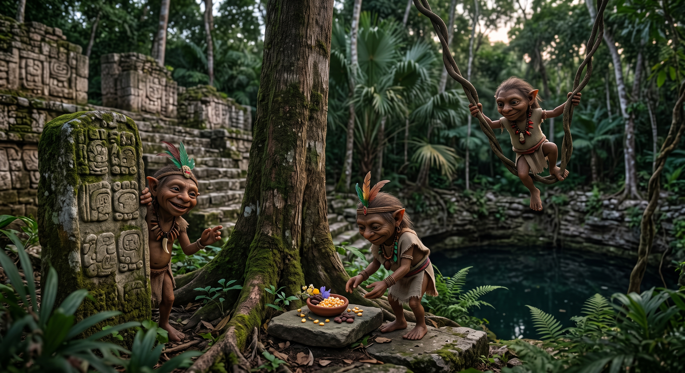

Dioses, maíz y secretos de una antigua civilización
La mitología maya reúne las creencias, historias y dioses de una de las civilizaciones más importantes de Mesoamérica. Para los mayas, la naturaleza, los astros, la lluvia, el maíz y el inframundo estaban relacionados con diferentes fuerzas y seres divinos. Sus dioses representaban elementos fundamentales de su vida y su entorno, como la lluvia, la sabiduría, la Luna, la muerte y otros fenómenos naturales.

Kukulkán — La Serpiente Emplumada
Kukulkán es una de las deidades más conocidas de la cultura maya. Su nombre significa aproximadamente "Serpiente Emplumada" y fue una figura especialmente importante entre los mayas de la península de Yucatán. Se le relacionaba con diferentes elementos de la naturaleza y con aspectos religiosos de la cultura maya. Una de las representaciones más famosas asociadas con Kukulkán se encuentra en Chichén Itzá, donde está la famosa pirámide conocida como El Castillo o Templo de Kukulkán.


Itzamná — Dios de la Sabiduría
Itzamná fue una de las principales deidades dentro de la religión maya. Se le relacionaba con el cielo, la sabiduría y el conocimiento. En diferentes tradiciones mayas aparece como una importante figura divina relacionada con el orden del mundo y con conocimientos fundamentales para la civilización maya. Debido a su importancia, ocupó un lugar destacado dentro del conjunto de dioses mayas.
Ix Chel — Diosa de la Luna
Ix Chel es una de las figuras femeninas más conocidas de la mitología maya. Es comúnmente relacionada con la Luna, la fertilidad, el tejido, la medicina y los nacimientos. Su culto tuvo especial importancia en lugares como la isla de Cozumel, donde existieron importantes espacios religiosos dedicados a deidades femeninas. Su figura demuestra la importancia que tenían los ciclos de la naturaleza y la vida dentro de las creencias mayas.


Chaac — Dios de la Lluvia
Chaac era una importante deidad maya relacionada principalmente con la lluvia. Para una civilización cuya agricultura dependía enormemente de las condiciones climáticas, la lluvia tenía una enorme importancia. Chaac aparece representado en numerosos elementos de la arquitectura y el arte maya. Su presencia estaba vinculada con el agua, las tormentas y la fertilidad de la tierra, elementos esenciales para el cultivo del maíz y la supervivencia de las comunidades mayas.
Ah Puch — Dios de la Muerte
Ah Puch es un nombre utilizado popularmente para referirse a una deidad maya relacionada con la muerte y el inframundo. En diferentes representaciones aparece con características relacionadas con la muerte, como un cuerpo esquelético o en estado de descomposición. Esta figura se relaciona con el mundo de los muertos y con las creencias mayas sobre el inframundo. La muerte tenía un papel importante dentro de la cosmovisión maya y era considerada parte del ciclo de la vida y la naturaleza.

Leyendas Mayas
La cultura maya cuenta con diferentes relatos y leyendas que explican el origen de los seres humanos, la naturaleza y la existencia de seres sobrenaturales. Estas historias fueron transmitidas de generación en generación y forman parte importante de la tradición maya.
La Creación del Hombre de Maíz
Según el Popol Vuh, los dioses intentaron crear a los seres humanos en diferentes ocasiones. Primero crearon seres de barro, pero eran débiles y no podían mantenerse firmes. Después crearon hombres de madera, pero estos no tenían la capacidad de reconocer ni venerar adecuadamente a sus creadores. Finalmente, los dioses encontraron el maíz y utilizaron este alimento para formar a los primeros seres humanos. De esta manera, el maíz se convirtió en un elemento fundamental dentro de la cultura maya, no solamente como alimento, sino también como parte de la explicación tradicional sobre el origen de la humanidad.


Dziú y el Maíz
La leyenda de Dziú cuenta la historia de un pequeño pájaro que realizó un acto de valentía para proteger las semillas de maíz. Según el relato, los dioses decidieron quemar los campos para renovar la tierra. Sin embargo, era necesario rescatar algunas semillas para que pudieran volver a cultivarse después del incendio. Dziú entró entre el humo y las llamas para salvar las semillas de maíz. El intenso calor afectó su apariencia, pero el pequeño pájaro logró cumplir con su misión. Como reconocimiento por su valentía, Dziú recibió la protección de los dioses. La historia destaca la importancia del maíz para los pueblos mayas y valores como el sacrificio y la valentía.
La Leyenda del Chom
El Chom es el nombre con el que se conoce al zopilote dentro de una conocida leyenda maya. La historia cuenta que los chomes originalmente eran aves de hermosas plumas y colores. En cierta ocasión se estaba preparando una gran celebración y se había colocado una enorme cantidad de comida para los invitados. Las aves, atraídas por el banquete, decidieron bajar y comer los alimentos antes de que comenzara la celebración. Como castigo por su comportamiento, sus hermosas plumas fueron transformadas en plumas oscuras y desde entonces fueron destinados a alimentarse de animales muertos y restos. De esta manera, la leyenda explica de forma tradicional por qué el zopilote posee su característica apariencia y alimentación.


La Leyenda de los Aluxes
Los aluxes son pequeños seres sobrenaturales que forman parte de las tradiciones mayas, especialmente en la península de Yucatán. Según las historias tradicionales, estos seres habitan en lugares como los montes, cuevas, cenotes y campos de cultivo. Se dice que los aluxes pueden convertirse en protectores de las tierras y las cosechas cuando son tratados con respeto. Algunos campesinos construían pequeñas casas para ellos y les dejaban diferentes ofrendas. Sin embargo, también se cuenta que pueden ser traviesos y provocar ruidos, esconder objetos o asustar a quienes entran en sus territorios sin mostrar respeto. Las historias sobre los aluxes continúan formando parte de las tradiciones y relatos populares de diferentes comunidades de la península de Yucatán.